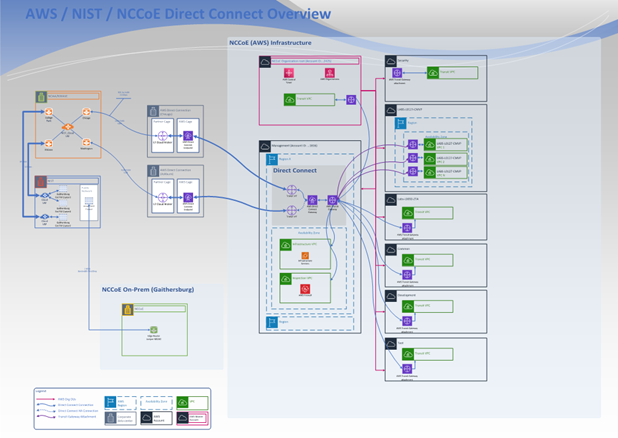
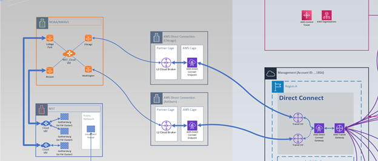
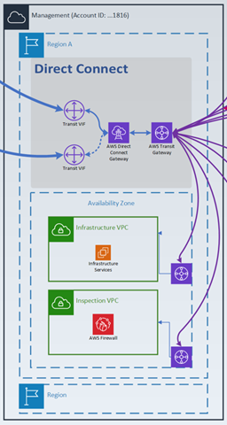
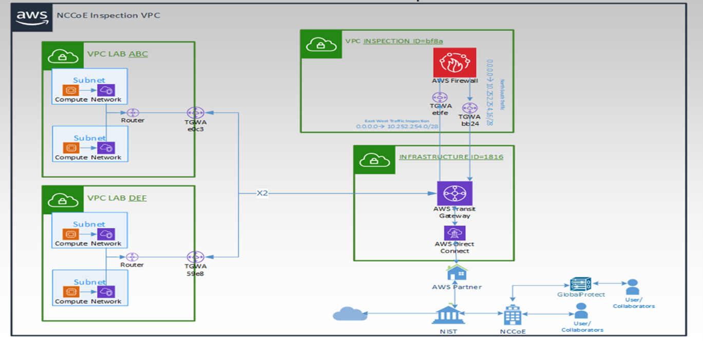

AWS Research Cloud System Architecture#
The following diagram illustrates the AWS research cloud architecture, including network connectivity to the on-premises NCCoE campus.

Figure 2: AWS research cloud architecture diagram#
On-premises to Cloud Network Connectivity#
The NCCoE AWS research cloud environment is connected to the on-premises private cloud via an AWS Direct Connect through NOAA/NWAVE. This provides the NCCoE with a dedicated private link between both environments.

Figure 3: AWS Direct Connect diagram#
Network Security#
AWS Direct Connect#
The AWS Direct Connect is terminated in a management/infrastructure account with an AWS Transit Gateway. A Transit Gateway Attachment (TGA) is deployed in each Virtual Private Cloud (VPC), routing traffic to/from the Transit Gateway.
{kind=link}

Figure 4: AWS research cloud landing zone#
Inspection VPC with AWS Network Firewall#
An inspection VPC with AWS network firewall is set up in the same account to inspect and route all traffic in and out (North/South) of the AWS research cloud, as well as inter-VPC traffic (East/West). A dedicated route is created per VPC. For more information on various deployment models and reference architectures, please visit the AWS website.
{kind=link}

Figure 5: Inspection VPC with AWS network firewall#
IP Management#
IP Addressing#
A class /16 network block was allocated to the AWS research cloud environment. Each member account is allocated one or more /22 network blocks. Each VPC is allocated a /24, and each subnet is allocated between a /26 and a /28, depending on its purpose and requirements.
Amazon Route 53#
Amazon Route 53 is Amazon’s Domain Name System (DNS) service, which provides three primary functions: domain registration, DNS routing, and health checking.
The NCCoE uses Route 53 primarily for our Managed AD synchronization with the on-premises AD. To establish a trust between the two domains, an outbound endpoint resolver with a forwarding rule to the on-premises domain needs to be configured.
Instructions for establishing this trust, configuring the endpoint resolver, and setting up the forwarding rules can be found in the AWS documentation for Creating a trust relationship between your AWS Managed Microsoft AD and self-managed AD.
IPAM#
Amazon’s VPC IP Address Manager (IPAM) is a VPC feature that enables planning, tracking, and monitoring of IP address assignment and allocation across the AWS environment.
The NCCoE deploys, as standard, three VPCs (Dev, Test, and Prod) per member account with a /24 per VPC. A fourth /24 is reserved for future growth. Given the above, the NCCoE does not currently use IPAM to automatically assign IP addresses, ensuring consistency with the NCCoE allocation standard.
Resource Access Management#
AWS Resource Access Manager (RAM) is a service that enables you to share AWS resources easily and securely within an AWS organization. The NCCoE is utilizing RAM to share and manage the allocated /16 network block, as well as the Transit Gateway, with other member accounts.
IPV6#
The NCCoE has a reserved IPV6 /48 network block that will be used in its AWS research cloud environment. IPV6 is not currently in use and will be integrated in the near future.
Network Routing#
Internal Private IP Traffic Routing#
The NCCoE AWS research cloud is deployed on a /16 private IP space. Careful consideration was given to the allocation of private IP blocks to ensure no overlaps existed between the on-premises VMware private cloud, the AWS research cloud, and other commercial cloud environments within the NIST network.
Dedicated Private IP Routing VLAN#
In addition to avoiding overlapping private IP ranges, changes to traffic routing were necessary between the on-premises VMware cloud and the AWS research cloud. Specifically, all traffic leaving the on-premises VMware cloud goes through a Network Address Translation (NAT) via an edge firewall. While this is common practice, it presented some challenges when attempting to establish a forest trust to facilitate synchronization between the on-premises authoritative identity source (AD) and the AWS-managed AD in the research cloud.
A new VLAN was created exclusively to route private IP network traffic between the on-premises VMware cloud and the AWS research cloud without the need for Network Address Translation (NAT). This simplified routing between both cloud environments while enabling internet-bound traffic to continue routing through a NAT.
S3 Gateway and Interface Endpoints#
S3 gateway endpoints and interface endpoints enable access to Amazon services from within a private VPC, removing the need for an internet gateway (IG) or NAT, further restricting data to an AWS network and enhancing security. The NCCoE has deployed S3 gateways to access S3 buckets and interface endpoints, enabling the application of lifecycle and security policies through AWS Lambda functions. With the S3 Gateway and Interface endpoints, the communication from the AWS Lambda functions can securely interact with Amazon S3 without being exposed to the public internet.
Transit Gateway#
The NCCoE AWS research cloud consists of a single transit gateway (see Figure 4 above). Transit Gateway Attachments (TGA) are created in each VPC to enable network routing. All traffic (North/South and East/West) flows through the single transit gateway.
AWS Resource Access Management#
AWS Resource Access Manager (RAM) is a service that enables easy and secure sharing of AWS resources within an AWS organization. The NCCoE is using RAM to share the transit gateway and the /16 network allocation with other member accounts.
Route Tables#
Several route tables were created to force all traffic (East/West & North/South) to go through an inspection VPC and Network firewall (more details in Network Firewall below).
All outgoing traffic from the AWS cloud is routed per the flow below:
Member VPC TGA -> Inspection VPC TGA -> Inspection VPC Firewall -> Inspection VPC TGA -> Transit Gateway.
East/West routing: All inter-VPC traffic follows the route below:
Member VPC 1 TGA -> Inspection VPC TGA -> Inspection VPC Firewall -> Inspection VPC TGA -> Member VPC 2 TGA.
External Traffic Routing#
The NCCoE AWS cloud utilizes Service Control Policies (SCP) and Identity and Access Management (IAM) policies to prevent the creation of Internet or egress gateways, ensuring that all traffic flows through predefined routes. All external/public traffic is currently routed through the direct connect and on-premises firewalls.
Network Firewall#
A network firewall is attached to the Inspection VPC following the Inspection Deployment Models with AWS Network Firewall blueprint. Two subnets were deployed in the inspection VPC, one per availability zone. A Firewall endpoint is in each of the subnets and monitors incoming and outgoing traffic.
The firewall inspects all North/South and East/West traffic as prescribed in the route table above in Route Tables.